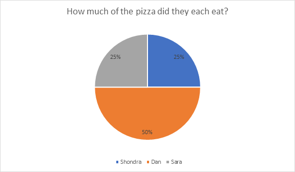

Unit Learning Objectives:
- 2.3 Differentiate between macro and micronutrients
- 2.9 Calculate calories for the macronutrients.
- 1.4.3 Identify how the national nutrition guidelines are used to make recommendations and guide individuals toward health.
Macronutrients
Macronutrients refer to those nutrients that are needed by the body in largest (macro) amounts. Carbohydrates, proteins and fats are the 3 macronutrients found in the foods that will nourish our body by providing the fuel to perform activities of daily life, exercise, and support growth and development of the body.
The macronutrients are the only nutrients that provide energy to the body. The energy from macronutrients comes from their chemical bonds. This chemical energy is converted into cellular energy that can be utilized to perform work, allowing cells to conduct their basic functions.
The three macronutrients make up the sum total of calories that you consume during the day. But, they are not divided equally in thirds. The majority of calories come from carbohydrates followed by fats and protein. Thus, we have recommended ranges to ensure one gets the right amount of each. We call these recommendations the Acceptable Macronutrient Distribution Ranges (AMDR). The AMDR will be discussed in more detail on a page titled "recommended intakes" in each of the macronutrient readings.
Calories
Food energy is measured in kilocalories (kcals). A kilocalorie is the amount of energy needed to raise 1 kilogram of water by 1 degree Celsius. In the US, the kilocalorie (kcal) is the most commonly used unit of energy and is often just referred to as a calorie. Strictly speaking, a kcal is 1000 calories. In nutrition, the term calories almost always refers to kcals. Sometimes the kcal is indicated by capitalizing calories as "Calories", and the two terms are used interchangeably.
Energy Sources (kcal/g)
- Carbohydrates = 4 calories
- Protein = 4 calories
- Lipids = 9 calories
Carbohydrates and proteins provide 4 calories per gram, and fats provide 9 calories per gram. Fat is the most energy-dense nutrient, because it provides the most calories per gram (more than double carbohydrates and protein). Although alcohol does provide energy (7 calories per gram), it isn't a nutrient because it isn't required as a source of nourishment to the body.
If you know the grams of carbohydrate, protein, and fat in a food, you can easily determine how many calories it contains. Here is an example:
14 grams carbohydrate = 14 x 4 = 56 calories
3 grams protein = 3 x 4 = 12 calories
5 grams fat = 5 x 9 = 45 calories
56 + 12 + 45 = 113 This food contains approximately 113 calories
Understanding the AMDR's
The Acceptable Macronutrient Distribution Ranges (AMDR's) are the recommended percentage of calories for carbohydrates, protein, and fat. These are set based on looking at years of research on potential health issues with deficient or excessive intake for each macronutrient. In particular, the AMDR's help to look at the ratio of the three macronutrients. These percent recommendations can be confusing to the average person, however.
The current AMDRs and Fat Breakdown
- Carbohydrate: 45% to 65% of total calories
- Protein: 10% to 35% of total calories
- Fat: 20% to 35% of total calories
- Saturated fat <10%
- Trans fat <1%
- Polyunsaturated fat 5-10%
- Monounsaturated fat 10-15%
How to Calculate Percent of Calories:
If you know how many grams of a macronutrient you had and how many total calories, you can easily calculate the percentage of calories. It is just simple algebra. The first thing you need to remember is how many calories per gram each macronutrient provides:
- Carbohydrate: 4 calories per gram
- Protein: 4 calories per gram
- Fat: 9 calories per gram
Note that alcohol provides 7 calories per gram, although it is not a nutrient.
Here is an example:
1,743 total calories
267 grams of carbohydrate (267 x 4 = 1068 calories from carbohydrate)
72 grams of protein (72 x 4 = 288 calories from protein)
43 grams of fat (43 x 9 = 387 calories from fat)
1068 + 288 + 387 = 1,742 calories. You can see that all calories have been accounted for. Except for alcohol, carbohydrate, protein, and fat are the only nutrients that provide calories to the diet.
Now let's calculate the % of calories for each by dividing calories from the macronutrient by the total calories:
Carbohydrate: 1,068 / 1,743 = 0.612 (61% of calories)
Protein: 288 / 1,743 = 0.165 (17% of calories)
Fat: 387 / 1,743 = 0.222 (22% of calories)
61% + 17% + 22% = 100%. You can see that all calories have been accounted for.
On Food Labels
You can do the same thing with individual food products if you have the Nutrition Facts on a food label to look at. However, the ratio of calories in individual foods is not nearly as important as looking at the ratio of macronutrients in your overall diet.
You can also determine the number of grams consumed from a macronutrient if you know the percent of calories, or determine a gram goal if you know your estimated calorie intake.
Example:
Hunter wants to keep his fat intake less than the maximum recommended 35% of calories. He consumes about 2,000 calories per day.
2,000 x 35% (0.35) = 700 calories from fat
700 / 9 = 77.7
Hunter should consume no more than 78 grams of fat per day
How to Understand Percent of Calories:
To understand these AMDR recommendations and put your intakes in perspective, it is important to look at your total calorie intake. These percentages look at the ratios between the macronutrients, not necessarily whether or not you are consuming enough (or too much) of each in grams.
It is possible to consume very few calories or an excessive amount of total calories and still have all of your macronutrients in normal % ranges. Also, all percentages cannot be "too low" or "too high".
When the percent of calories for one macronutrient is low, one or both of the other two are likely to be too high.
Example:
Here is a good analogy on percentages. Let's go back to a pie chart and look at a pizza.
Let's assume three co-workers - Shondra, Dan, and Sara - order and split a pizza for lunch. Dan eats half the pizza (50%), while Shondra and Sara split the other half, and each has 25% of the pizza. Is Dan eating too much pizza? Not necessarily – but he is consuming a lot more of the pizza than Shondra or Sara.

What if the three co-workers were splitting a small, personal size pizza? Dan would probably still be hungry! Shondra and Sara would be even hungrier. While Dan is getting double the amount of pizza than his co-workers, he is not necessarily consuming too much pizza. The goal would not be to cut the amount of pizza Dan is eating and give more to Shondra and Sara. It would be to increase the size of the pizza.
On the other hand, what if they were splitting an extra-large pizza? Dan would still be getting twice as much as his co-workers, and it is possible that he might be eating too much, depending on his individualized needs. It is also likely that Shondra and Sara would now be getting enough pizza too (or maybe even too much), despite only getting half of what Dan had. The size of the pizza (pie) matters!
What if Sara and Shondra got to the pizza before Dan did and consumed 70% of it together? Dan can no longer consume 50% of the pizza since only 30% of the pizza is left. If you change one percent, the other percent(s) will change as well.
Compare this pie graph example to your overall diet.
The "size" of your diet matters when looking at the percent of calories from carbohydrates, protein, and fat. Suppose your overall diet is very deficient in calories. In that case, it is likely that you lack proper amounts of all macronutrients needed for good health, even if the percentages are in a normal range. The same can be true if your overall diet is too high in calories. Very simply, the AMDR's are showing how to balance your diet between the three macronutrients.
Low carbohydrate diets are trendy right now. Can your diet be very low in carbohydrates AND low in fat? Possibly, but only if your overall calorie intake is very low and you are looking at grams. It is guaranteed that if you are not eating many carbohydrates, the percent of calories from fat will exceed the AMDR goals unless you are consuming nothing but low-fat protein sources. Most people don't have time to sit around and "calculate their macros" themselves, as it is very tedious. There are many apps and software to help do that for you.